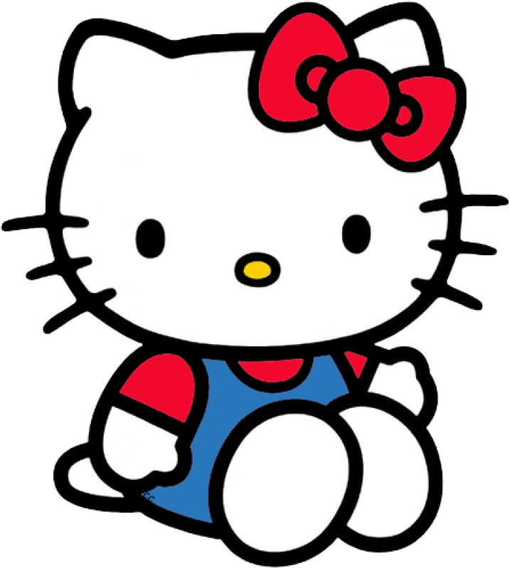
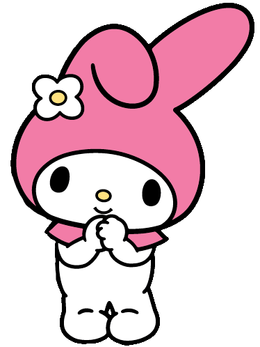
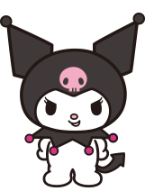
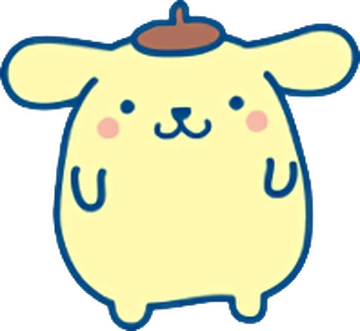
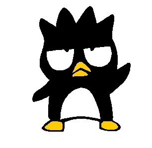
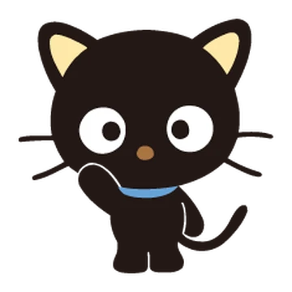
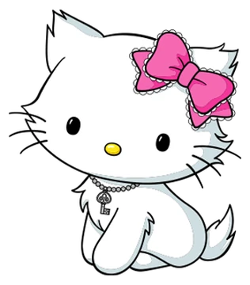

Hello Kitty hahmot

Hello Kitty
Hello Kitty on tunnetuin Sanrio hahmo. Hello Kitty on kuvattu valkoisena Japanin bobtail -kissana. Hänellä on punainen tai pinkki rusetti vasemmassa korvassaan. Hello Kittyn oikea nimi on Kitty White, ja hän on kotoisin Lontoosta. Hänen kerrotaan olevan viisi omenaa pitkä, ja hän painaa kolmen omenan verran. Hän on iloinen ja hyväsydäminen. Hän on hyvä leipomaan ja rakastaa äitinsä tekemää omenapiirakkaa.

My Melody
My Melody on pieni pupu, jolla on päässä punainen tai vaaleanpunainen huppu, joka peittää hänen korvansa. Hän on tunnettu ystävällisyydestään ja rehellisyydestään. My melodyn paras ystävä on Hello Kitty, ja hänen vihollisensa on Kuromi.

Kuromi
Kuromi on My melodyn vihollinen. Hän on valkoinen pupun-omainen otus, jolla on pirun häntä pupun hännän sijaan. Hänellä on päässä musta narrin hattu jossa on vaaleanpunainen pääkallo edessä. Pääkallon ilme vaihtelee Kuromin mielialan mukaan. Hänen syntymäpäivänsä on Halloweenina, ja hänen nimi tarkoittaa ’mustaa kauneutta’.

Cinnamoroll
Cinnamoroll on kotoisin kaukaiselta pilveltä taivaalla. Hän on valkoinen pullea koiranpentu, jolla on isot korvat joiden avulla hän voi lentää. Hänellä on siniset silmät, vaaleanpunaiset posket ja kikkura häntä joka muistuttaa korvapuustia (tästä nimi Cinnamoroll). Hän on lempeä ja aina valmis auttamaan ystäviään.

Keroppi
Keroppi on sammakko, jolla on isot silmät ja V:n muotoinen suu. Hän on yksi pienimmistä hahmoista. Hän rakastaa seikkailua, ja hänen eloisa luonteensa tekee hänestä tunnetun Donut Pondilla.

Pompompurin
Pompompurin on iloinen ja ystävällinen kultainennoutaja. Hän asuu omassa korissaan hänen siskon omistajan talon eteisessä. Hänet tunnistaa helposti ruskeasta baskeristaan.

Badtz-Maru
Badtz-Maru on pingviini, jolla on piikikkäät hiukset. Hänellä on röyhkeä persoona, toisin kuin Hello Kittyllä. Japaniksi ”badtz” tarkoittaa ”X” eli väärää vastausta, ja ”maru” viittaa oikeaan vastaukseen eli ”O”. Näin ollen hänen nimi tarkoittaa ”oikea-väärä”, ja joskus häneen viitataan myös nimellä ”XO”.

Chococat
Chococat on musta kissa jolla on suuret silmät, neljä viiksikarvaa ja kuten Hello Kittyllä, ei suuta. Hänen nimensä tulee ruskeasta nenästään. Hänen viikset ovat kuin antennit joiden avulla hän saa tietoa, usein nopeammin kuin muut. Chococat on leikkisä ja energinen, sekä erittäin tykätty ystäviensä kesken.

Charmmy Kitty
Charmmy Kitty on Hello Kittyn lemmikki kissa. Hän näyttää Hello Kittyltä, mutta hänellä on enemmän oikean kissan piirteitä. Hänen nimensä tulee sanasta ”charm”, sillä hänellä on kaulassaan avain Hello Kittyn korurasiaan. Sanotaan, että avain annettiin hänelle, sillä kiiltävät esineet tekevät hänestä onnellisen. Kiltteyden ja kohteliaisuuden lisäksi hän osaa olla myös röyhkeä.